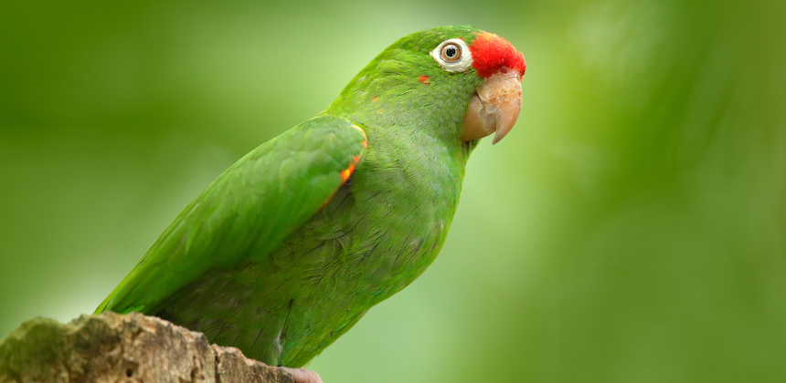

<script>
    var myIndex = 0;
    carousel();
    function carousel() {
        var i;
        var x = document.getElementsByClassName("mySlides");
        for (i = 0; i < x.length; i++) {
            x[i].style.display = "none";
        }
        myIndex++;
        if (myIndex > x.length) {myIndex = 1}
        x[myIndex-1].style.display = "block";
        setTimeout(carousel, 4000); // Change image every 4 seconds
    }
</script>